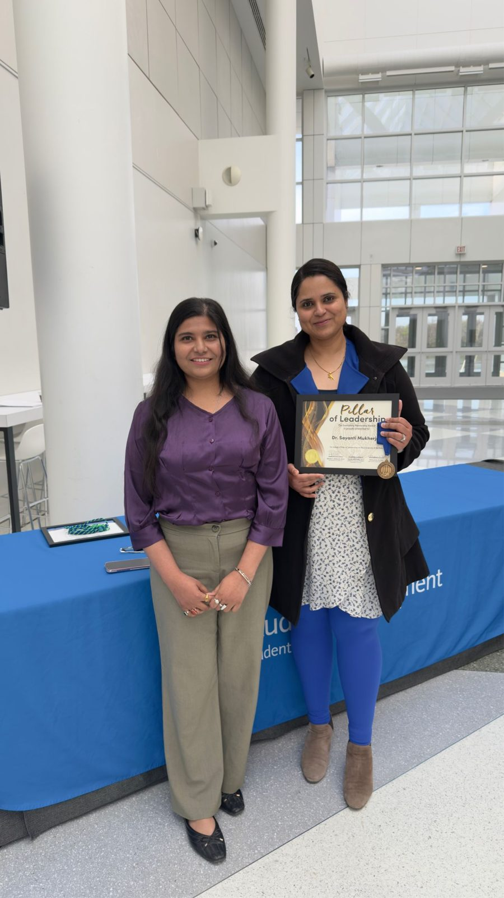
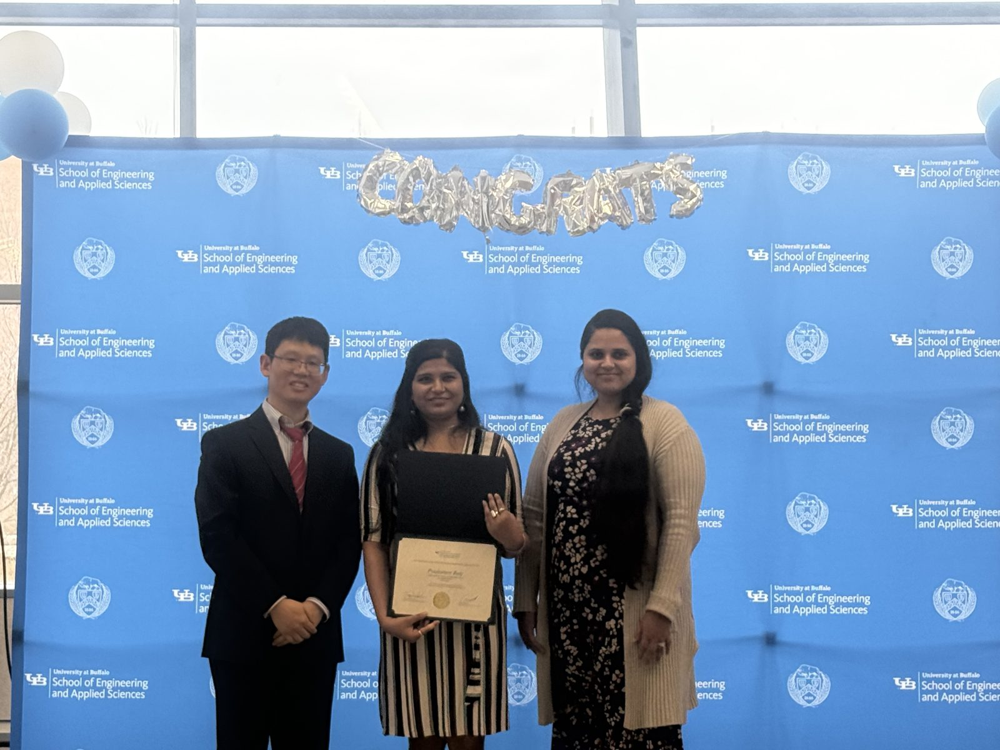
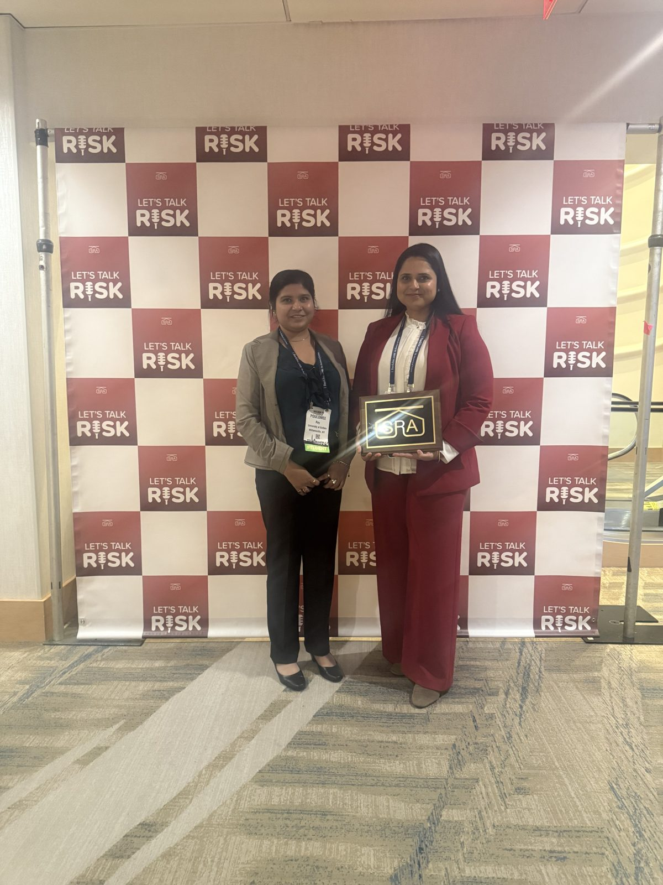
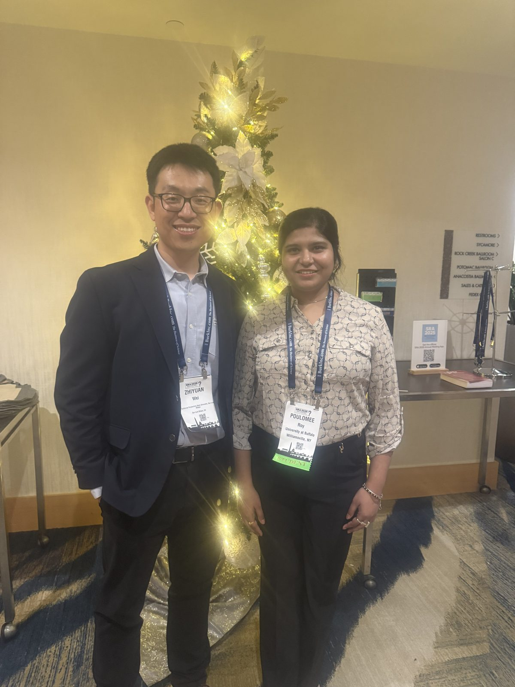
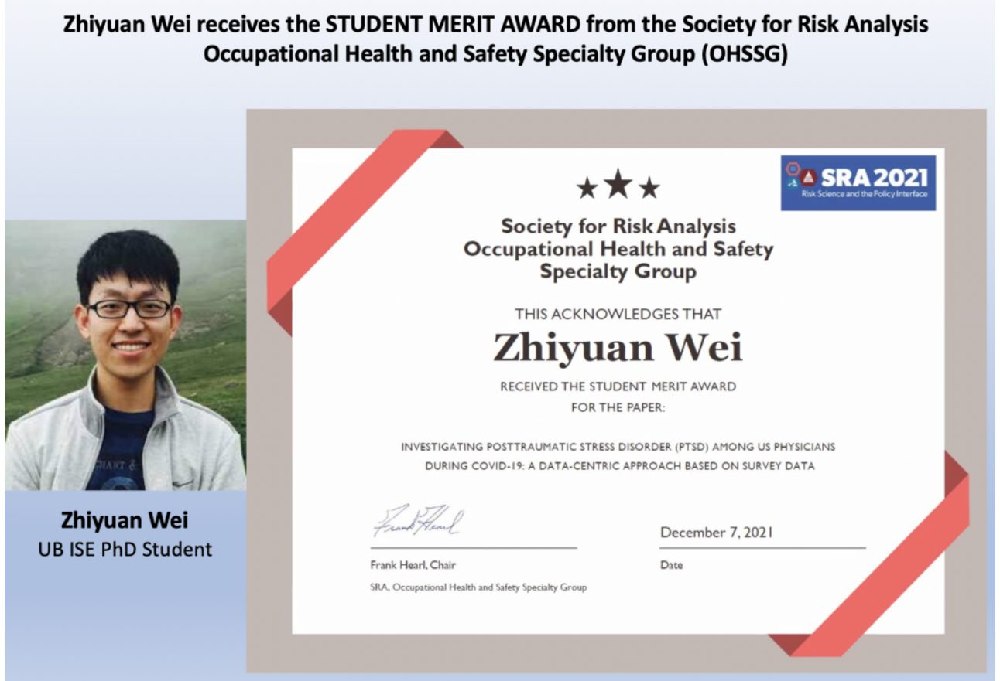

SRA Student Best Paper
JERSG. Data-driven analysis of equity in wildfire resource allocation.
Recognition for OASIS research, papers and students.


Dr. Sayanti Mukherjee is a 2025 recipient of UB's Pillars of Leadership Award for Exemplary Mentorship (Mid-Level Faculty/Staff).
At the OASIS Lab, students learn to collaborate across disciplines, ask meaningful questions and do research with real-world impact. Her mentorship has helped students publish, present and grow into thoughtful contributors in engineering and policy.


The Society for Risk Analysis presented Dr. Sayanti Mukherjee with the 2025 Chauncey Starr Award in recognition of her exceptional contributions to the field of risk analysis.

Dr. Sayanti Mukherjee led team OASIS UB, one of eight winners of the U.S. Department of Energy's American-Made Science Synthesis Prize (September 2025), for synthesizing the challenges and opportunities of integrating renewable energy into the grid, with policy recommendations.
DOE winners announcement · Niagara Gazette coverage · Project page
JERSG. Data-driven analysis of equity in wildfire resource allocation.
EISG. Examining disparities in access to critical facilities using fine-grained human mobility network.
Best Student Paper and Best Track Paper. Forecasting emergency shelter demand with human mobility data.
Mapping human mobility variation and identifying critical services during a disaster.
OHSSG. PTSD among U.S. physicians during COVID-19.
Supply inadequacy risks related to climate-sensitive electricity demand.
Estimating climate-demand nexus for long-term adequacy planning.
Optimal selection of transmission line rehabilitation strategies.
 2024
2024Poulomee Roy
Honorable mention, Society for Risk Analysis Engineering and Infrastructure Specialty Group.

2024Poulomee Roy
2023–2024 recipient, as an M.S. student.
Receiving her award at a UB School of Engineering and Applied Sciences ceremony.

2025Poulomee Roy
Poulomee Roy with Dr. Mukherjee at the SRA Annual Meeting, Washington, DC.

2024Zhiyuan Wei
Zhiyuan Wei (now at Cal Poly) with Poulomee Roy at SRA 2025.
 2023
2023Zhiyuan Wei
Examining disparities in access to critical facilities using a fine-grained human mobility network.
2023Zhiyuan Wei
2022Zhiyuan Wei
Recognized for effective, enthusiastic and professional teaching.
2022Zhiyuan Wei
Modeling disparities in access to essential services under disasters.

2021Zhiyuan Wei
Investigating PTSD among U.S. physicians during COVID-19: a data-centric approach based on survey data.
Certificate dated December 7, 2021.
 2023
2023Prasangsha Ganguly
2021Prasangsha Ganguly
Understanding wildfire-induced risk on interconnected infrastructure systems.
Fatima Umar
Data-driven analysis of equity in wildfire resource allocation.